A7) Information mechanisms for managing the impacts of climate change on water resources will be enhanced in order to improve resilience.

UPDATE 2020
During the 17th Session of March 2020, the Council of Ministers for Sustainability agreed on a favorable response to the contents of this National Contribution update to the Paris Climate Agreement 2015.
Chile's updated Nationally Determined Contribution was approved by the President of the Republic, and then submitted on 9th April 2020 to the Secretariat of the United Nations Framework Convention on Climate Change.
Every generation faces unique challenges, but none has had to face such an urgent and formidable challenge as the one our generation is facing today in the environment: climate change and global warming; that is the mother of all battles, as it is a fight for humankind’s survival.
Scientific evidence is absolutely overwhelming and conclusive. Even by fulfilling all the commitments of the Paris Agreement now, the temperature would significantly exceed the target established, reaching an increase of almost 3.4 degrees, which is disastrous. We need much more demanding and ambitious commitments and measures to limit temperature rise to 1.5 degrees at most.
That is Chile’s position. Thus, the elaboration of this update of the Nationally Determined Contribution (NDC) has involved a cross-sectional, broad and multi-sectoral participatory process, focused on addressing different views and visions nationwide, through various spaces for reflection and meetings on climate change.
I want to thank the valuable work of so many people from different institutions, both state and non-state, whose contributions allowed us to outline the new and more ambitious international targets and commitments exposed herein.
I would especially highlight the work, vision and contribution delivered by the COP25 Presidential Advisory Council, which brings together figures from diverse fields, former Presidents of the Republic, representatives of scientific, public and private sectors, civil society, different branches of the State, the Comptroller General of the Republic and representatives of local governments as well.
Likewise, I would like to thank the invaluable collaboration of the COP25 Scientific Committee, which, through seven working groups, contributed the voice and the scrutiny of the national scientific community. The high standards of their work and the commitment expressed through their proactive vision strengthened and enhanced the contribution of our country, according to the requirements of science at the international level.
I also wish to acknowledge the active participation of civil society and the experience of representatives from various non-governmental organizations that made possible the incorporation of a new social pillar in updating our NDC.
This pillar became one axis of our commitment, putting people and their communities at the center of our climate action, focusing our efforts on advancing in a just transition and sustainable development.
I want to appreciate the contribution of the private sector, through their trade union organizations and different associations, who showed an active participation in the process, expressing their commitment to move towards a low-emission and climate-resilient economy. Their commitment is materializing itself in specific results, such as the closure of coal-fired power generation plants. The process has already started in 3 plants, will continue with 7 more by 2024, and will conclude no later than 2040 with the closure of all coal plants nationwide.
I appreciate the collaboration of the different ministries and public services to drive progress in delivering multi-sector agreements and commitments, reflected in this update. We also acknowledge the generous contribution of different multilateral organizations and the international cooperation received to develop a broad and participatory process.
All of the above has been possible thanks to the commitment, enthusiasm and participation of all citizens with their ideas, proposals and contributions to the update of this Nationally Determined Contribution (NDC).
Sebastian Piñera E.
President of Chile
Government of Chile
Chile, like all the Parties subscribed to the Paris Agreement, must implement the necessary actions to fulfill the commitments agreed in its Nationally Determined Contribution (NDC), and move towards inclusive and sustainable development. These contributions represent the core instruments guiding climate action to prevent the increase in global average temperature, raise global resilience, and mobilize public and private investments on a sustainable development path, balancing the environmental, social and economic variables.
Chile accepted the challenge of leading and organizing the COP25, fostering countries' ambition, expressed through greater reductions in greenhouse gas emission targets to reduce the emission gap required to keep the global temperatures below 2°C, focusing efforts on a target of 1.5 °C, in line with what the science is telling us.
Our country confirms its commitment to climate action by updating its NDC, increasing ambition in all its components, and focusing particularly on transparency, clarity and monitoring of the established goals. Thus, the process of updating our NDC was participatory, crosscutting and extensive, collecting important opinions and proposals through public consultation.
The current update of the NDC occurred in parallel to the preparation of the Climate Change Framework Bill in Chile. Thus, it was designed to align our international climate commitments with the guidelines and instruments proposed under the bill. This project establishes long-term national climate targets, regulations to guide climate action as well as structures and arrangements in climate governance to advance towards a low-emissions and climate resilient economy.
It is important to mention that Chile, like other countries, is facing a pandemic scenario due to COVID19. This situation may result in a health crisis demanding our attention and management. In this sense, our priority is overcoming that crisis and moving towards sustainable development with a pragmatic and crosscutting focus, holding human and territorial wellbeing at its core.
The actions we take today, together with a just transition towards sustainable development, will define the type of society that we will build in the coming decades. Special attention has been paid to the afore-mentioned issue, which led to the incorporation of a specific social pillar focused on a just transition and sustainable development goals. This pillar guides the development and implementation of commitments incorporated in each component of the updated NDC, noting the heightened vulnerability of those sectors of the population which are most exposed due to their socioeconomic circumstances.
The novel incorporation of this social pillar on just transition and Sustainable Development Goals is displayed in the development of criteria for the update and implementation of the NDC. We seek to enhance the synergy between Chile's climate commitments and the national agenda, demonstrating the close link between climatic and socio-environmental dimensions in this way. This integrated vision is based on the knowledge obtained by placing people at the center of the design of policies for sustainable development, which is reflected in our national contribution.
In terms of mitigation, we have made significant progress addressing the effects of climate change, in line with the demands of the science, incorporating the principle of ambition throughout the update of the NDC. This is reflected in the mitigation goal, replacing the previous emission intensity indicator, conditional and unconditional, with unconditional absolute indicators, with a goal of 95 MtCO2eq by 2030, an emissions maximum in 2025, and a GHG emissions budget of no more than 1,100 MtCO2eq in the period 2020-2030. This is an intermediate point on the road to carbon neutrality by 2050, which we have established in the Draft Framework Law on Climate Change that is currently under discussion in the National Congress of Chile.
Another relevant element of this update is the integration of policies related to climate and clean air, in order to mitigate short-lived1 climate pollutants, specifically black carbon (BC), which, contributes to global warming and local pollution. Therefore, noting the importance of linking climate objectives with air quality and enabling people to experience benefits in their quality of life, a goal based on black carbon2reduction, which entails multiple health benefits, by achieving cleaner cities, minimizing local pollution and contributing to climate change mitigation, has been established.
In terms of Climate Change Adaptation, important adjustments have been made based on work involving various institutions, including the establishment of targets in two particularly urgent areas to build a more resilient country: i) water management and sanitation; and ii) disaster risk management. Specifically, in terms of water management, which has become an urgent focus of climate action, the commitment involves the development of indicators to set water security goals, at a regional and organizational level; water management at the watershed level; and increasing the resilience of health services. These commitments represent an increase of ambition, as they incorporate measurable goals and address areas where greater urgency has been detected, focusing action towards a resilient country.
Moreover, this NDC update incorporates a new integration component encompassing the role of oceans, circular economy, forests, peat bogs and ecosystems, as elements that holistically contribute to facing both the causes and the effects and impacts of climate change. This is an effort to advance towards an integrated and synergistic vision in the design and implementation of climate action in Chile.
In terms of the implementation measures, we have searched for coherence with the long-term climate objectives of the country, ensuring that capacity building, development and transfer of technologies, along with climate financing, respond to the priorities established as per the objective of emissions neutrality by 2050. In this regard, it is important to note that each of these working areas has established the development of a strategic vision aligned with emissions neutrality and climate resilience as a priority, which will guide and drive the specific commitments of each component.
The time for action is now. We face significant challenges and we have enormous opportunities for sustainable development in Chile. The strong participation of all actors-public, private, civil society, academy, science and citizenship as a whole-is essential for good decision making and implementing our commitments. We will move forward on this path with a long-term vision, taking note of the actions required to address our nation's needs holistically, with particular attention to the most vulnerable sectors of society and our most exposed ecosystems.
Since the submission of Chile's first NDC in 2015, the country has substantially advanced in the development of institutionality, policies and capacities related to climate change. The COP25 Presidency has brought a strong stimulus to awareness and knowledge of problems related to climate change at all levels, increasing the country's ambition and the urgency of climate action.
This NDC update incorporates scientific evidence as a solid basis for climate policy and action, noting that human influence on the climate system is unequivocal and increasing, and that its impacts are being felt in all of the world's continents and oceans.3 In particular, the “Special Report on Global Warming of 1.5°C” states that global warming has already reached 1°C, and with the current rate of GHG emissions we would reach 1.5°C by 2030-2052. The report also highlights the impacts on ecosystems, human health and well-being that would result from limiting warming to 1.5°C warming, compared to 2°C over pre-industrial levels, and calls for an urgent increase in ambition. With this in mind, in order to increase Chile's ambition in the NDC, the Scientific Committee created in the context of COP25 was invited to deliver contributions, and thus incorporate information provided by the Chilean scientific community on climate change. On the other hand, Chile's share of global greenhouse gas (GHG) emissions, was approximately 0.25% in 2016.4 In that same year CO2 emissions per person at a global level were 4.4 tCO2, and according to figures issued by the National Greenhouse Gas Inventory of (NGHGI, 2016), Chile slightly exceeded that amount with 4.7 tCO2 per person. However, it is considerably below the average of OECD countries, which is 9.2 tCO2 per person (Third Biennial Update Report BUR, 2018). However, it is important to note that the country's emissions have increased by 114.7% since 1990 and by 20.0% since 2007. The main GHG released in 2016 was CO2 (78.7%), followed by CH4 (12.5%), N2O (6%), and fluorinated gases (2.8%).
The Energy Sector (related to fossil fuels consumption) is responsible for most GHG emissions nationwide, accounting for 78% of total emissions in 2016, primarily due to the use of mineral coal for electricity generation and diesel for terrestrial transportation. The land use, land-use change and forestry (LULUCF) sector is the only one absorbing GHG in the country, and has been recorded as a sink in the emissions registry data available since 1990.
With respect to the observed and projected impacts5 of climate change in Chile, evidence indicates an increase in temperatures nationwide, with greater intensity in the northern area (1.5°C-2.0°C above the historical average) and in mountainous areas of the Andes, compared to coastal zones. With regards to rainfall, trends show a decrease between 2031 and 2050, leading to a drier climate compared to the historical average, which affects mostly the regions between Atacama and Los Lagos, the most productive from an agricultural point of view and with the highest population density in the country.6
Current scientific evidence attributes at least 25% of the drought experienced in Chile since 2009-which is the most temporally and spatially extensive on record-to the anthropogenic climate change.7 Research is also being conducted on the occurrence and intensity of extreme events that might be linked to climate change, such as floods, mass wasting, intensification of forest fires and sea swells, and ocean acidification. In this context, Chile's geographical, climatic, economic and socio-cultural characteristics are relevant in terms of vulnerability and exposure to climate change impacts.
Chile is culturally and socially diverse,8with a population characterized by 12.8% indigenous people, a significant increase in migration (increasing from 0.81% in 1992 to 4.35% in 2017), 16.2% senior citizens, 12.7% of people with disabilities and 55.7% women. Similarly, biodiversity is rich and diverse, accounting for high endemism, exclusivity and multiple types of habitat with critical functions for the maintenance of key ecosystem services, both for Chile and for the rest of the world.9 The cultural, social and natural diversity of our country is one of its most important assets; consequently, the incorporation of diversity in decision making is crucial to building a resilient country, including where possible the knowledge of our indigenous and local communities, the preservation and restoration of our biodiversity and the expansion of nature-based solutions. incorporation of diversity in decision making is crucial to building a resilient country, including where possible the knowledge of our indigenous and local communities, the preservation and restoration of our biodiversity and the expansion of nature-based solutions.
Local communities and municipalities are also key, as they will suffer the direct impacts of climate change, and their ability to respond to such impacts is essential to reducing the damage and losses caused by extreme events. Therefore, strengthening the responsiveness of the population and institutions facing the challenges of an uncertain and changing future is a crucial element of the process of adapting to climate change.
Just Transition and Sustainable Development in Updating and Implementing Chile's NDC
Chile has made important progress in its development, which is reflected in international and national indicators. For example, according to the World Bank, in 2018 the Gross Domestic Product (GDP) per capita, adjusted by purchasing power, was US$25,222.10 In addition, the country ranks first regionally and 42nd worldwide in the United Nations Human Development Index (HDI).11 With respect to poverty, the results of the CASEN 2017 survey indicate that the proportion of the population below the poverty line in Chile fell from 29.1% in 2006 to 8.6% in 2017.
However, although the percentage of population in poverty is under 10%, the supplementary figure for multidimensional poverty stands at 20.7%. This means that despite the progress made, Chile's transition to development faces important challenges that are not apparent from welfare indicators based on income level alone. Indeed, the “National Voluntary Review Report”12 issued in 2019 by the National Council for the Implementation of the 2030 Agenda for Sustainable Development, recognizes the challenges of inequality, housing, gender, education and health, among others.
The update of Chile's NDC complies with the country's ratification of the Paris Agreement,13which emphasizes the intrinsic relationship between climate actions, their responses and the impacts on equitable access to sustainable development and poverty eradication. Therefore, this update acknowledges the need to maximize synergies14between climate commitments, the 2030 Agenda for Sustainable Development and the Sustainable Development Goals (SDGs).15 The SDGs present 17 objectives and 169 targets which seek to achieve a balanced and integrated development across economic, social and environmental dimensions. Chile has adhered to these goals and reports on this to the United Nations16 through the “National Voluntary Review Report”.
Given the importance of aligning these agendas, Sustainable Development is recognized, through the SDGs, as a crosscutting approach of the NDC, establishing the way each commitment under the NDC contributes to the SDGs. In this context, the NDC uses the following definition of sustainable development provided by the World Commission on Environment and Development (WCED, 1987):
Development that meets the needs of the present without compromising the ability of future generations to meet their own needs, and balances social, economic and environmental interests.
In addition, the incorporation and integration of the concept of just transition appears as an enabling condition for the implementation of an ambitious NDC, aligned with global and national goals. The International Labor Organization (ILO) developed the “Policy guidelines for a just transition towards environmentally sustainable economies and societies for all”, which recognizes that a transition towards a socially and environmentally sustainable economy can be an important engine for job creation, social justice and the eradication of poverty.
Essentially, the just transition is a future-oriented framework focused on action that identifies opportunities for public and private investment in both sustainable and inclusive economic development.17The just transition is based on global consolidated frameworks on climate change, human rights, labor standards and inclusive growth.
According to the United Nations Principles for Responsible Investment (PRI), the focus of this concept is summarized as follows:
It focuses attention on the need to anticipate the social implications of the shift to a low-carbon economy and the increasing physical impacts of climate change.
The previously defined cross-cutting pillars seek socio-environmental sustainable development, minimizing potential negative impacts on the most vulnerable in society and ensuring equal opportunities in the process, without excluding marginal groups that could be negatively affected by policies adopted to fight climate change. This is particularly relevant in our country, where the transition towards carbon neutrality, with a power generation matrix based mainly on non-conventional renewable energies, will imply designing measures that foster a just and equitable transition to manage changes in the labor market of that sector appropriately.
This NDC is based on the just transition and sustainable development social pillar. To ensure adequate implementation, the following criteria will be considered in the design, application and monitoring of each commitment:
Synergy with the Sustainable Development Goals: Each commitment must contribute to the fulfillment of one or more Sustainable Development Goals of the 2030 Agenda, which will be made explicit in each component and specific contribution, clearly identifying which SDG target it contributes towards.
Just transition: Focused mainly on the decarbonization of the power generation matrix, the challenges and needs of the most vulnerable shall be analyzed, recognizing, respecting and promoting the obligations related to a just transition towards a low carbon and climate resilient economy.
Water security: The instruments and measures arising from the implementation of this NDC shall favor water access in terms of proper quantity and quality, determined according to each basin's characteristics, for its maintenance and timely use for health, subsistence, socioeconomic development and ecosystem conservation.
Gender equality and equity: The design and implementation of this NDC must consider a fair allocation of charges, costs and benefits, with a focus on gender and special emphasis on sectors, communities and ecosystems vulnerable to climate change.
Cost-efficiency: The design and implementation of this NDC will prioritize measures that are effective for climate change mitigation and adaptation and present the lowest economic, environmental and social costs, taking into account short, medium and long term scenarios.
Nature-based solutions (NbS): The instruments and measures arising from the implementation of this NDC will favor the application of NbS, understood as actions seeking to protect, sustainably manage and restore natural or modified ecosystems, addressing social challenges effectively and adaptively, while simultaneously providing benefits for human well-being and biodiversity.for human well-being and biodiversity. 18
Types of knowledge: The design of instruments and measures arising from the implementation of this NDC will be carried out based on the best scientific evidence available, and will analyze traditional knowledge of indigenous people and local knowledge systems, where available.
Active Engagement: The design of instruments and measures arising from the implementation of this NDC will consider the active engagement of citizens through participation mechanisms established by each State Entity, and in those expressly indicated under Law No. 20,500. There will be additional mechanisms established to deepen citizens' participation.
The following table (A) shows the components and structure of this NDC and the just transition and sustainable development social pillar:
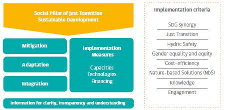
Contribution in Just Transition and Sustainable Development N°1-2-3 (SP1-2-3)
| CONTRIBUTION | SDG |
|---|---|
|
SP1) Ensure the application of the criteria mentioned in Section 3.2 in the processes of update, elaboration and implementation of the NDC. SP2) Establish a mechanism to measure, report and verify the application of the criteria mentioned in section 3.2. SP3) Develop by 2021 a “Strategy for Just Transition” that protects the rights of the most vulnerable in the process of decarbonizing the energy matrix, ensuring active participation of citizens in its 27 design and implementation. |
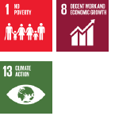 |
In terms of mitigation, the Paris Agreement (PA) sets the following long-term objective: “holding the increase in the global average temperature to well below 2°C above pre-industrial levels and pursuing efforts to limit the temperature increase to 1.5°C” (Article 2.1.a). To address this objective, Article 4.1 of the Agreement requests Parties to achieve the following, with some flexibility for developing countries:
Reach global peak of greenhouse gases (GHG) emissions as soon as possible; and
Reach balance between anthropogenic emissions by sources and removals by sinks in the second half of this century.
To advance these objectives, the Agreement establishes a five-year term for Parties to submit their contributions and mitigation measures through Nationally Determined Contributions (Articles 4.2 and 4.9). In addition, it states that countries should strive to formulate and communicate long-term low greenhouse gas emission development strategies (Article 4.19).
The subsequent NDC submissions by each country will represent a progression relative to the current NDC and will reflect the highest possible ambition taking into account their common but differentiated responsibilities and respective capabilities, in light of different national circumstances (Article 4.3).
The Agreement requests countries to update or submit new NDCs in 2020, maintaining the original implementation period of 2025 or 2030, as appropriate (Decision 1/CP.21, paragraphs 23 and 24). At COP25 (Decision 1/CMA.2 paragraphs 5, 6 and 7) the Parties underlined their concern about the urgent need to strengthen mitigation commitments considering the large gap highlighted by the IPCC reports between current NDCs and the objective of limiting the temperature increase to 1.5° C. They also reiterated the call to update current NDCs with the highest possible ambition, considering common but differentiated responsibilities, in light of the national circumstances.
The quantitative goals presented in this NDC are part of a wider analysis, in which Chile will seek to reach GHG neutrality by 2050,19 as established in the Draft Framework Law on Climate Change that is currently under discussion in the National Congress. As such, this contribution and its consecutive iterations will be intermediate milestones to achieve the 2050 neutrality goal, conforming in design with the necessary measures to reach this.
Neutrality by 2050 is a country vision and goal, but not only from a climate point of view. It brings economic, social and environmental implications, requiring efforts by all sectors to achieve these objectives, and thus reduce the impacts of climate change.
This long-term vision should be understood as Chile's work in two equally relevant lines of action: i) reaching a sustained decrease in GHG emissions; and ii) increasing and maintaining natural carbon sinks.
Regarding the reduction of emissions, the application of policies and measures for an effective and permanent reduction of GHG emissions in Chile over time will require a multi-sectoral effort. In terms of removals, the country must develop instruments to protect, maintain and increase natural carbon sinks, considering the multiple ecosystem services they provide (conservation and protection of biodiversity, water resources, ecosystems, and reduction of impacts from natural disasters, among others).
Therefore, this commitment includes, within the integration component, a specific goal for the LULUCF sector that involves its role in achieving carbon neutrality and in the adaptation to the impacts of climate change (see integration component).
The evidence presented in the IPCC Special Report on Global Warming 1.5° C highlights the need to advance towards a low-carbon and climate resilient economy, which requires Parties to reduce their emissions rapidly during the next decade.
In the case of Chile, according to the National GHG Inventory,20 and the related forecasts, it is estimated that the analyzed actions would deliver a 30% reduction in the GHG balance21 by 2030, as per 2016 figures. In addition, under certain specific conditions (financial, markets, technological and political) Chile could exceed a 30% reduction, potentially with a reduction of up to 45% in net emissions by 2030, taking into account actions for GHG emissions mitigation and/or capture.
This update presents an increase in the ambition of Chile's commitment to reach the Paris Agreement objective, in line with a path towards GHG neutrality by 2050. This increase in ambition is consistent with what was promoted and highlighted by the country during COP25, which is reflected in the decision 1/CP.25 by all Parties.
The following mitigation commitment of emissions, excluding LULUCF sector, considers the requirements of transparency in the presentation of the goals incorporated into the NDCs, established in the Enhanced Transparency Framework and the guidelines raised from the COP24 in Poland, alongside analysis of the current NDC indicator and the review on different types of NDC at international level.
Contribution to Mitigation Nº1 (M1)
| CONTRIBUTION | SDG |
|---|---|
|
M1)Chile commits to a GHG emission budget not exceeding 1,100 MtCO2eq between 2020 and 2030, with a GHG emissions maximum (peak) by 2025, and a GHG emissions level of 95 MtCO2eq by 2030.
Chile recognizes that Article 6 of the Paris Agreement is a mechanism for countries to implement mitigation actions in a cost-effective manner and to advance in the implementation of new technologies in collaboration with other Parties, through Internationally Transferred Mitigation Outcomes (ITMOs), for example. It is also the only article that facilitates and/or promotes private sector participation, which is key to increase ambition. Therefore, at the national level, in 2020 we will establish a public-private dialogue roundtable to define specific policy for the use of markets, taking into account clear guidelines that preserve environmental integrity, avoid double-counting and promote sustainable development. |
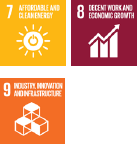 |
Chile recognizes that actions to mitigate short-lived climate pollutants also contribute to limit the global average temperature increase. Thus, the work must be consistent with GHG emission reduction efforts. Reducing emissions of black carbon, which is one of the main short-lived pollutants, generates a series of important local co-benefits in terms of improvements in air quality, reduced impacts on people's health (respiratory diseases) and the costs related with these.
Black carbon represents a significant portion of particulate matter (MP2.5) measured in Chilean cities. The main sources of black carbon in Chile are the use of diesel for transportation, firewood for heating and residential cooking, and biomass used as an energy source in the industrial sector. Air quality constitutes a national priority for environmental management. Thus, various actions will be implemented, including: new atmospheric decontamination plans; regulations applied to the public and private transport system; work with communities to improve household energy efficiency; and setting emission and quality standards for the main industrial pollutant issuers, among others.
En este contexto, Chile se compromete a:
Contribution to Mitigation Nº2 (M2)
| CONTRIBUTION | SDG |
|---|---|
|
M2) Reduce total black carbon emissions by at least 25% by 2030, with respect to 2016 levels. This commitment will be implemented primarily through national policies focused on air quality. In addition, it will be monitored through permanent and periodic work to improve information available in the black carbon inventory. |
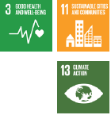 |
Contribution
One of the targets of the Paris Agreement, specified under Article 2, is to increase the capacity to adapt to the adverse effects of climate change, promoting climate resilience and low GHG emissions development.
Furthermore, Article 7, which establishes a global adaptation goal, acknowledges the current need for adaptation and the fact that lower mitigation levels will increase the need for additional efforts in adaptation, which may entail higher costs.
In turn, the Intergovernmental Panel on Climate Change (IPCC) confirmed in its Fifth Report (2013, 2014) the undeniable and increasing human influence on the climate system, with impacts observed in all continents and oceans.
In this context, Chile recognizes the importance of adaptation in strengthening domestic resilience to the impacts of climate change. The country is moving forward in planning and implementing adaptation actions through different climate change policies and instruments, at a national and subnational level. These instruments include coordinated actions to protect people and their rights, livelihoods and ecosystems, bearing in mind the urgent and immediate needs identified in each sector, at national and sub-national scale.
The impacts of climate change are felt foremost at regional and local levels. Accordingly, Chile acknowledges the importance of capacity building and the development of multi-level governance to strengthen resilience in communities and specific localities through the establishment of a multi-level governance system. This system incorporates the development of Regional Climate Change Committees (CORECC), who will plan and implement action to face climate change, in close collaboration with central government, municipalities, and other non-state and sub-national actors. In addition, Chile is moving forward the development of Regional Climate Change Action Plans in four administrative regions as a pilot experience.
Adaptation is a dynamic process covering essential aspects of development, and, therefore, should consider intersectoral and multidimensional cooperation and coordination to address the complexity of this challenge. In accordance with the Social Pillar, established in this NDC, the country recognizes the need to link the economic, social and environmental development of Chile with climate actions. From this perspective, the commitments set out below contribute directly to the fulfillment of the Sustainable Development Goals (SDGs).
Chile will contribute to the global target of adaptation, reducing vulnerability, strengthening resilience and increasing the country's adaptive capacity (in particular increasing water security and considering nature-based solutions) in order to protect people, livelihoods and ecosystems, taking into account the urgent and immediate needs of the country, based on the best science available.
Chile's contribution to adaptation is structured in two areas:i) Climate change policies, strategies and plans, and ii) Areas of greatest urgency in climate adaptation actions. The commitments for each part are detailed as follows:
Contribution to Adaptation N°1 (A1)
| CONTRIBUTION | SDG |
|---|---|
|
A1) By 2021, Chile will define the objective, scope, goals and elements structuring the adaptation component in its Long Term Climate Strategy, based on a participatory process involving different actors at various regional/local scales. |
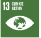 |
Contribution to Adaptation N°2 (A2)
| CONTRIBUTION | SDG |
|---|---|
|
A2) The coordination of climate action on adaptation at national level will be strengthened through the national adaptation plan, and the adaptation plans for 11 priority sectors, incorporating lessons learned from the implementation of earlier plans. Those documents will be used as inputs for the Adaptation Communication that will be sent to the UNFCCC in 2022 at the latest. |
The plans will be developed according to the following schedule:
2022: The National Adaptation Plan shall be updated and in the first stages of implementation.
2022: The first Adaptation Plans on water resources, coastal areas and the mining sector shall be developed and in the first stages of implementation.
2021-2028: The Adaptation Plans for sectors in Agriculture and Forestry (Updates: 2021 and 2026), Biodiversity (Updates: 2022 and 2027), Fisheries and Aquaculture (Updates: 2022 and 2027), Health (Updates: 2022 and 2027), Facilities (Updates: 2023 and 2028), Energy (Updates: 2023 and 2028) Cities (Updates: 2023 and 2028), Tourism (Update: 2026), Water Resources (Update: 2027), Coastal Areas (Update: 2027), and Mining (Update 2027) shall be updated and implemented.
Contribution to Adaptation Nº3 (A3)
| CONTRIBUTION | SDG |
|---|---|
|
A3) By 2025, Climate Change capacities and institutionality at the subnational level will be strengthened and the implementation of necessary adaptation and mitigation actions will have begun through the delivery of Regional Climate Change Action Plans in 10 administrative regions. By 2030, 16 administrative regions will have their own climate change action plans. |
Contribution to Adaptation Nº4 (A4)
| CONTRIBUTION | SDG |
|---|---|
|
A4) During the implementation phase of this NDC, existing studies and analysis on climate vulnerability and risk in Chile will be updated and expanded to address relevant threats, considering gender in the approach. Those studies wills serve as key inputs for the design of adaptation measures. |
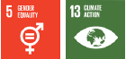 |
Specifically, the following climate actions will be developed:
By 2021, a climate risk map platform for Chile's continental territory, at a communal level.
By 2021, an estimation of the costs of inaction on climate change, and by 2025 an estimation of costs associated with historic by losses and damage as part of this.
By 2025, assessments of climate change risk to vulnerable groups nation-wide, with a special focus on indigenous peoples, poverty and gender.
Contribution to Adaptation Nº5 (A5)
| CONTRIBUTION | SDG |
|---|---|
|
A5) By 2026, the current monitoring and evaluation system will have been strengthened, with indicators on progress and impact for all climate change adaptation instruments to assess the progress and compliance of established goals. |
Contribution to Adaptation Nº6 (A6)
| CONTRIBUTION | SDG |
|---|---|
|
A6) During the implementation period of this NDC, the inclusion of non-governmental actors in the planning and implementation of adaptation measures will be strengthened. |
Specifically, the following climate actions will be developed:
By 2025, an implemented and updated record of actions on adaptation by non-governmental actors.
By 2030, public-private cooperation mechanisms for the execution of adaptation actions, at national and local scale.
Contribution to Adaptation Nº7 (A7)
| CONTRIBUTION | SDG |
|---|---|
|
A7) Information mechanisms for managing the impacts of climate change on water resources will be enhanced in order to improve resilience. |
|
Specifically, the following climate actions will be developed:
By 2025, a national indicator for hydrological watersheds will be established to track water shortages and risk, helping to promote water security nationwide.
By 2025, a system to certify levels of water consumption management at an organizational level will be created, through the HuellaChile Program.
By 2030, Watershed Strategic Plans for the Management of Water Resources will be established, taking into account climate change adaptation in the country's 101 hydrological basins.
By 2030, 95% of Rural Health Systems will be inspected and registered, ensuring the quality standards of rural drinking water.
By 2030, 100% of companies in the health sector will have implemented disaster risk management plans, including consideration of risks resulting from climate change.
By 2030, 100% of the 2030 Agenda Goals 22for the health sector will be implemented.
By 2030, all water-related public infrastructure projects will consider in their evaluation, the ability to protect the population and land (through river works) and/or support as a priority the demands of urban and/or rural human water consumption in their areas of influence.
By 2030, non-treated sewage will be reduced by at least 25%.
Contribution to Adaptation Nº8 (A8)
| CONTRIBUTION | SDG |
|---|---|
|
A8) The capacity to adapt to climate-related risks and the capacity to manage the adverse effects of socio-natural disasters will be strenghtened throughout the country. |
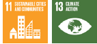 |
This contribution includes the development of the following climate actions:
By 2021, guidelines on the effect of climate change in the phenomenon of human mobility in Chile will be developed, in line with related international instruments.
By 2022, a specific national plan for risk variables associated with heat wave will be developed, through the cross-sectoral work of the Meteorological Risk Variables Working Group.
By 2025, all Regions in Chile will incorporate climate change adaptation actions in the Regional Plans for Disas44 ter Risk Reduction, in coordination with the Regional Com-mittees for Climate Change (CORECC).
By 2030, the National Policy for Disaster Risk Reduction 2019-2030 will be fully implemented, and its content will be harmonized with the Sendai Framework for Disaster Risk Reduction, the Paris Agreement and the 2030 Agenda for Sustainable Development. This policy instrument will also be reviewed by 2023.
Adaptation and mitigation should be considered complementary strategies to reduce and manage climate change risks in the development of public policies. Substantial reductions in greenhouse gas emissions in the next decades may reduce future climate risks, and thus, increase the possibility of effective adaptation, reduce costs and the challenges of long-term mitigation and contribute towards, contributing to climate-resilient pathways for sustainable development.23
This section addresses a number of thematic areas that merit an integrated approach, as they support both mitigation and adaptation objectives. This includes commitments regarding circular economy, land use, land use change and forestry (LULUCF) and oceans. These are priority lines of work for the country and have therefore been included in this the NDC update.
This novel component aims to highlight synergies between mitigation and adaptation actions in the face of climate change. It establishes commitments that will be implemented in the period 2020-2030, the delivery of which must also take into account the circumstances and requirements arising from the COVID19 pandemic, with possible adjustments to the execution of the NDC in relation to the country's social, environmental and economic priorities.
Circular economy (CE) seeks to move from a linear ‘extract-use-discard’ economic model, towards a circular model that utilizes and optimizes stocks and flows of materials, energy and waste. It is focused on the efficient use of resources, looking to extend the useful life of products, prioritizing the use of non-conventional renewable energy (NCRE). Its implementation will generate benefits, especially in a scenario of limited resources and growing needs. Instead of extracting natural resources, the circular economy proposes the recovery and reuse of materials that have already been processed, keeping them in circulation for as long as possible, and consequently, reducing the level of GHG emissions and releasing the pressure on ecosystems.
Accordingly, and in line with the just transition towards a resilient, low-emissions economy, the circular economy creates economic value for a larger workforce. Indeed. In, according to the Waste and Resources Action Program (WRAP), switching to a CE model could create up to 3 million additional jobs in Europe by 2030.24
Chile is well positioned to lead on this path. In fact, the country has taken the first steps through Law N°20.920 which considers Producers' Extended Responsibility, as well as through incentives for innovation projects in this area, and the creation of jobs in new markets resulting from the management of priority products. Moreover, it presents an opportunity to fully incorporate those working informally as recyclers into economy, improving their condition at work and standards of living. Today we are witnessing a growing movement led by private companies, which is illustrated by the numerous firms committed to the Clean Production Agreement (CPA) as well as the large number of bids submitted to CORFO's calls for proposals on circular economy.
Chile commits hereby to:
Contribution to Integration - Circular Economy N°1 (I1)
| CONTRIBUTION | SDG |
|---|---|
|
I1) In 2020, develop a Circular Economy Roadmap for the years 2020 to 2040, agreed at a national level, which will focus on the transition towards a circular economy with short, medium and long-term measures established to 2040. |
|
Contribution to Integration - Circular Economy N°2 (I2)
| CONTRIBUTION | SDG |
|---|---|
|
I2) In 2020, develop a National Organic Waste Strategy, aimed at increasing the recovery of organic waste generated at municipal level by recovering nutrients, organic materials or substrates into the productive process and, thereby, contributing to climate change adaptation and mitigation. |
|
Contribution to Integration - Circular Economy N°3 (I3)
| CONTRIBUTION | SDG |
|---|---|
|
I3) By 2022, establish and implement, metrics and indicators on circularity to monitor the country's progress in circular economy and identify its contribution to climate change mitigation and adaptation. |
|
The capacity of terrestrial ecosystems to capture carbon plays a vital role in reducing the increase of the planet's average temperatures. The reduction of emissions released into the atmosphere is equally important as the removal of those previously released. Only once the capture of greenhouse gases begins to exceed emissions in the same period, and these emissions are sequestered (permanently), it will be possible to begin the process of reversing the conditions driving climate change and its impacts.
In most cases, measures taken in each sector give rise to other mitigation impacts which must be considered and assessed in parallel to develop a holistic vision of each mitigation action. The effects of these actions contribute directly to the efforts required for climate change adaption.
Each of these measures represents a viable option to propose an integrated climate mitigation and adaptation action, which, on the one hand, embraces the Sustainable Development Goals (SDGs) as an engine of principles and development guidelines and, on the other, shields local vulnerabilities resulting from impacts of climate change at a national scale.
The contributions of the sector are detailed below.
Forest ecosystems can capture and sequester large quantities of CO2 through the accumulation of aerial and underground biomass, and the deposit of organic matter accumulated in ground. While forest sequestration is one of the functions strengthening the response to the impacts of climate change, it is important to recognize that it is not the only climate action provided by forests, as they also deliver beneficial services for both climate change adaptation and SDGs' compliance.
One of the most direct relationships is captured in SDG 15, which is to “sustainably manage forests, combat desertification, and halt and reverse land degradation and halt biodiversity loss”. In addition, forests are intimately linked to the cross-cutting elements of this NDC in terms of adaptation: i) Water security; ii) Disaster Risk Reduction; iii) Inclusion of vulnerable groups, with a special focus on gender; and iv) Nature-based solutions.
One of the most exacerbated effects of climate change is the occurrence of wildfires and the increase in their magnitude. Tackling these issues is another important challenge for the mitigation and adaptation efforts, at a national and international levels. In this context, the conditions for wildfire occurrence and propagation must be minimized. Strengthening sustainable forest management reduces the land area impacted by these catastrophic events, while also preventing the development of conditions that enhance the vulnerability of an ecosystem must also be considered.
The mitigation of damage and reduction of the likelihood of landslides are also part of the multiple roles of forests in reducing natural disasters. Indeed, they also play an important role in the preservation of biodiversity, which is highly threatened by climate change, and respect and care for the ecologically sustainable development of these ecosystems is a crucial pillar to meet the targets of SDG 13 and 15.
Forest ecosystems are closely related with people's well-being (health, identity, spirituality, emotional balance) and they also bring benefits both for culture and tourism benefits. On the other hand, decrease in forest ecosystems bring negative impacts on vulnerable communities, such as indigenous people who live in different natural areas nationwide.
In this context, it is worth noting that the Ministry of Agriculture (MINAGRI), through the National Forest Corporation (CONAF) has been working since 2013 in a National Strategy for Climate Change and Vegetation Resources (ENCCRV), which is a public policy instrument validated by the Council of Ministers for Sustainability. This Strategy has various direct and facilitating measures, defined based on a national highly participatory process, focused in addressing climate change, desertification, land degradation and drought (DLDD) through an adequate management of the vegetation resources aiming to prevent or decrease historical rates of deforestation, vegetation clearance and degradation of native forests, xerophytic formations and other vegetative resources, while promoting the recovery through reforestation, revegetation and sustainable management of native habitats nationwide.
This strategy is one of the main tools in reaching the different targets on mitigation related to LULUCF, along with regulations and instruments granting incentives for forest owners to preserve or create new forests.
The key features of these commitments are:
Chile's commitment may consider financial support from the State, as well as the related mechanisms for implementation, i.e. one or more instruments of public policy with appropriate economic incentives for forest owners to get interested in taking part in the different programs.
The proposed targets will include a focus on gender, enabling development of more transparent, inclusive and targeted initiatives to decrease or eradicate existing gender gaps, and recognizing the role of women as “agents of change”, capable to provide a significant contribution in climate action.
On this basis and in consistency with the SDGs, Chile commits its contribution through the following measures:
Contribution to Integration- LULUCF Forests N°4 (I4)
| CONTRIBUTION | SDG |
|---|---|
|
I4) Chile commits to the sustainable management25 and recovery26 of 200,000 hectares of native forests, representing GHG captures of around 0.9 to 1.2 MtCO2eq annually by 2030. |
|
The management plan to be implemented shall consider the following sustainability criteria:
Planning of long-term activities to ensure forest conservation (permanence).
Sustainable yield parameters guaranteeing that extractions do not exceed forest growth will be applied.
Contribution to Integration- LULUCF Forests N°5 (I5)
| CONTRIBUTION | SDG |
|---|---|
|
I5) Chile commits to afforest 200,000 hectares, of which at least 100,000 hectares will comprise permanent forest cover, with at least 70,000 hectares of native species. Recovery and afforestation27 will be undertaken primarily in land suitable for forest growth and/or priority areas for conservation and will represent captures of between 3.0 and 3.4 MtCO2eq annually by 2030. |
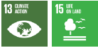 |
To deliver benefits in climate change adaptation, these afforestation measures must meet the following conditions:28
Promote the use of native species, having into consider-ation for their selection and management the appropriate environmental conditions.
As per Law Nº20.283 on Native Forest Recovery and Forest Promotion, and under the consideration that afforestation is undertaken in lands without vegetation, the substitution of native forests is not considered.
Preference for forestry land29 and/or conservation priority areas,30considering degraded soils with active erosive processes, mass movement risks resulting from erosion and those not suitable for crop cultivation. In this context, they should prioritize:
Promote the use of native species, considering the selection and management according to the appropriate environmental conditions.
Considers the use of pioneer species holding a sig-nificant environmental range to improve the status of areas for a later establishment of other species more demanding in their settlement.
Prioritize the settlement of mixed forests (more than one species) through native or exotic species or a mix of them, with different rotations to provide a permanent coverage and regular provision of ecosystem services (protection of land, water, fauna, landscape value, amongst others) to avoid or minimize the use of clear felling as a final cutting method.
Incorporate the use of shrub species as an alterna-tive for areas under more extreme conditions (deserts, north exposure slopes, areas exposed to strong winds, among others) for the purposes described above.
Use plantations with lower density and/or earlier thinning to generate healthier trees and reduce water stress.
Include non-native species with a higher tolerance to temperature changes and humidity, especially in degraded areas, where the settlement of native species is limited.
Always consider current and predicted future social, environmental and productive conditions in the selection of species and in their management.
Modify forest management techniques and sched-ules to facilitate the maintenance of continuous coverage, the retention and incorporation of organic matter in soils, the incorporation of natural regeneration methods, the provision of environmental services, and to ensure protection functions amongst others.
Favor reforestation with mixed methods, i.e. the plantation is enriched by natural regeneration through sowing, in order to strengthen genetic variability.
Promote longer rotations, improving carbon uptake rates, as well as optimizing the amount and permanence of sequestered carbon.
Promote the development of other uses for timber products, maintaining the carbon retained duly sequestrated.
Contribute to the organization and restoration of forest landscapes, promoting a mosaic distribution, which allows increasing the scenic value of territories, generating and maintaining biological corridors, improving wildfire prevention, aiding the fighting and suppression of forest fire, among other functions.
Social, environmental and economic variables fostering the development of local economies and increasing small and medium landholders' wellbeing will be included.
In this context, the National Forestry Corporation (CONAF) must prepare and submit afforestation reports every two years to the National Congress of Chile and the Council of Ministers for Sustainability.
In this way, we are committing to a new approach to afforestation in our country, which differs from the conventional plantation and land use practices created under other environmental, social and economic contexts than those faced by society today. Planted forests will meet new objectives and standards, complementing their productive role to move towards providing services and greater social scope functions at local, national and international levels. In particular, they should play a pivotal role in mitigating and adapting to this phenomenon as one of its main axes, given the new climate change scenarios and their effects.
Under this focus, newly planted forests will both confront climate change and meet numerous complementary objectives through the provision of diverse environmental services including, among others: soil protection; improvement of basins’ water regulation; production of timber and non-timber goods; reduction in the severity and extent of forest fires and other natural disasters; biodiversity conservation; provision of sociocultural services; support for the development of associated communities; and reduction of poverty.
Contribution to Integration - LULUCF - Forests N°6 (I6)
| CONTRIBUTION | SDG |
|---|---|
|
I6) By 2030, reduce emissions in the forestry sector associated with degradation and deforestation of the native forest by 25%, with respect to average emissions in the period 2001-2013.31 |
|
In order to fulfill this commitment, the following actions proposed in the ENCCRV (National Strategy on Climate Change and Vegetation Resources), will be considered:
Strengthen management models in forest wildfire prevention and restoration of burned areas.
Strengthen sustainable management models on the use of natural resources.
Apply management models to reconcile livestock with conservation forest.
Strengthen phytosanitary protection in native plant resources.
Adaptive vegetation resource management to climate change, desertification, land degradation and drought.
Regulatory adjustment and agricultural development compatible with plant resources.
Support to the forestry sector.
The ENCCRV, which currently considers reference levels for six regions nationwide (from the Maule to the Los Lagos Region), it is considered to incorporate additional regions, such as Aysen and Magallanes.
Wetlands are ecosystems recognized for their capacity to capture and store large amounts of carbon, while also providing other important ecosystem services for climate change adaptation, such as water filtration, maintenance of its purity, water flow regulation, and reduction in the occurrence of floods and temperature regulation in surrounding areas. Currently, there is limited information on the total area of wetlands in Chile, including peatlands, and on estimates of their contribution to GHG capture and storage.
At the same time, wetlands —especially coastal, urban and peatlands— are highly threatened by land use change, unsustainable exploitation, the expansion of urban areas and infrastructure and the effects of climate change, which threatens long term sustainability. It is necessary to improve the knowledge of these ecosystems and establish standardized metrics to assess their capacity for climate change adaptation and mitigation, and to measure the co-benefits of these areas, implementing actions for conservation and sustainable use. On this basis, Chile establishes the following commitments:
Contribution to Integration - LULUCF – Peatlands N°7 (I7)
| CONTRIBUTION | SDG |
|---|---|
|
I7) By 2025, peatland areas and any other types of wetland will be identified under a national inventory. |
|
Contribution to Integration - LULUCF - Peatlands N°8 (I8)
| CONTRIBUTION | SDG |
|---|---|
|
I8) By 2030, standardized metrics will be developed to evaluate the capacity of wetlands (especially peatlands) for climate change adaptation or mitigation, implementing actions to enhance these co-benefits in five pilot sites in public or private protected areas in the country. |
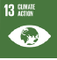 |
The attributes of nature and its benefits for people are phenomena occurring at all scales, from local to global. Indeed, nature plays a crucial role in the provision of food, energy, medicines, and genetic resources supporting the maintenance of living standards. The global assessments of the Intergovernmental Science-Policy Platform on Biodiversity and Ecosystem Services (IPBES) and the Intergovernmental Panel on Climate Change (IPCC) note that establishing protected areas and restoration projects are just two possible interventions, and that there is a need to consider wider strategies in human-dominated landscapes to enable more support for biological diversity and realize nature's full contributions towards society. The increase in degradation factors affecting landscapes, ecosystems and biodiversity, bringing a negative impact in people's well-being and in the development of economic activities, a problem influencing our country as well, obliges us to address this matter promptly.
In this context, the Ministries of the Environment and Agriculture developed a National Landscape Restoration Plan for 2021-2030, to create a unique and synergistic bi-ministerial agenda favoring the restoration of landscapes nationwide. This plan is the result of a systematic collaboration process between two ministries that, with their distinct institutional mandates, understand terrestrial ecosystems as a common space in need of recovery and maintenance, as a national priority task in the transition towards the restoration of landscapes, in an incremental, continuous and sustainable process.
For the purposes of the plan, landscape restoration is the continuous process of improving human well-being and recovering the ecological functionality of large terrestrial, continental and marine-coastal waters landscapes for different uses, actors and ecosystems
Emphasizing that it is a long-term process aiming at restoring communities' ecological functionality and quality of life. It is important to note that landscape restoration essentially refers to restoration processes leading to greater sustainability and resilience of territories facing climate change, recovering biodiversity and increasing the provision of ecosystem goods and services.
Protected areas, ecological corridors, native forests, agroforestry systems, agriculture, planted forests, riparian strips, marine-coastal zones, and human settlements, amongst others, are part of the various elements included in restoration landscapes.
This plan's approach, framed in Chile's ambitions to face climate change, facilitate the implementation of different restoration strategies that, as a whole and under a proper governance, aim to achieve economic, environmental and social sustainability in the long-term through mitigation and adaptation actions. In this context, the national objectives of landscape restoration will focus on reconciling a sustainable recovery of productivity in agricultural and forest soils; the conservation, sustainable management and restoration of forests and other different types of ecosystems, and recovering at the same time the biodiversity and ecosystem services for the well-being of communities and people.
The restoration of landscapes includes, in general terms, ecological restoration processes, rehabilitation of eroded soils, rehabilitation of hydrological areas, recovery of landscapes and ecosystems affected by forest fires, catastrophes or other degradation factors, conservation and protection of natural or ecologically valuable areas, among others.
Contribution to Integration –Crosscutting to ecosystems N°9 (I9)
| CONTRIBUTION | SDG |
|---|---|
|
I9) By 2021, a National Plan for the Restoration of Landscapes will be developed, which will consider restoration of 1,000,000 hectares of ecosystems, prioritizing those facing greatest social, economic and environmental vulnerabilities. |
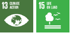 |
Most scientific forecasts indicate that the increase of greenhouse gases concentrations in the atmosphere and the rise in global average temperature will cause severe changes in marine ecosystems and ecosystem services in response to increased acidification, deoxygenation and sea level rise.32 33 34
The ocean is currently responsible for capturing about one third of anthropogenic CO2 emitted into the atmosphere 35 36 37 and for absorbing about 90% of the heat resulting from these emissions. 38 39 However, to enable a greater potential contribution of the ocean to the objectives of climate change mitigation and adaptation, ocean science and ocean management policies must rapidly identify and support the development of ambitious actions at local level that can then be scaled up.40
One of the most practical and cost-effective strategies used for the protection of the ocean is the creation of marine protected areas (MPAs) which, with the appropriate implementation and management, can contribute significantly to protect biodiversity and recover degraded species, ecosystems and habitat. Scientific evidence recognizes the importance of MPAs and their contribution to the overall objectives of marine conservation. However, it has recently begun to highlight their potential as tools to contribute to mitigation and adaptation efforts against climate change, and the urgent need to make changes in public policies to recognize and strengthen this link, especially to fight against effects such as:
Increase of carbon dioxide concentration in the atmosphere
Increasing storms and other extreme weather events
Reduction of oceanic productivity
Changes in environmental conditions
Changes in the distribution of species
Acidification and deoxygenation of the ocean.
Today, Chile has 39 marine protected areas which represent, in coverage, 42% of the Exclusive Economic Zone, quadrupling the goal requested by the United Nations by 2020 in the framework of the Aichi targets of the Convention on Biological Diversity. With respect to the inclusion of climate change in the management of marine protected areas, Chile has proposed making advances at two levels:
Level 1: evaluation of risks and vulnerabilities in marine protected area by effects of climate change and adjustment of management to protect that area from these impacts.
Level 2: Evaluation of co-benefits the area offers in adaptation and mitigation of climate change and adjustment of management to enhance these co-benefits.
In addition, it is important to note, for the purposes of improved understanding, that “under-represented marine ecoregions are those holding under 10% of their surface covered as marine protected area”.41
Chile undertakes, in marine protected areas, the following:
Contribution to Integration - Ocean N°10 (I10)
| CONTRIBUTION | SDG |
|---|---|
|
I10) New protected areas will be established in under-represented marine ecoregions. The identification of such areas shall take into account criteria related to the effects of the climate change and the construction of a network of protected marine areas, among others. In addition, protected areas will be established in coastal ecosystems for wetlands, state-owned lands and use and property of the federal authorities to supplement the marine network. |
|
This contribution considers the following climate actions to be developed:
By 2030, protect at least 10% of under-represented marine eco-regions (Humboldt, Central Chile, Araucanía and Chiloe), in the framework of a participatory marine spatial planning, based on science and holding criteria to deal with the effects of climate change.
By 2025, protect at least 20 coastal wetlands as new protected areas.
By 2030, protect at least 10 additional coastal wetlands as protected areas.
Contribution to Integration - Ocean N ° 11 (I11)
| CONTRIBUTION | SDG |
|---|---|
|
I11) All marine protected areas of Chile created up to 2020 will have a management or administration plan under implementation, taking into account actions for adaptation to climate change. |
|
The following climate actions will be specifically developed:
By 2025: 100% of marine protected areas created up to 2020 will hold management or administration plans including actions for adaptation to climate change.
By 2025: Management or administration plans of at least 40% of the marine protected areas created before 2020 will be implemented at least through monitoring, control, community involvement and threat control programs.
By 2030: 100% of marine protected areas created be-tween 2020 and 2025 will have management or administration plans including actions for adaptation to climate change.
By 2030: Management or administration plans for 100% of the marine protected areas created up to 2020 will be implemented, through monitoring, control, community links and threat control programs.
By 2030: Implementation of a methodology for the evaluation of management effectiveness of 100% management or administration plans of marine protected areas in order to know the progress of targets proposed in said plans for mitigation and adaptation to climate change.
Contribution to Integration - Ocean N°12 (I12)
| CONTRIBUTION | SDG |
|---|---|
|
I12) The co-benefits of different ecosystems in marine protected areas will be assessed with respect to climate change mitigation and adaptation. Actions will also be implemented to strengthen these co-benefits. |
|
Specifically, the following climate actions will be specifically undertaken:
By 2025: Three marine protected areas of Chile will have standardized metrics for the evaluation of their capacities for adaptation or mitigation to climate change.
By 2030: metrics for monitoring and verification of ad-aptation or mitigation capacities will be applied in at least five marine protected areas, while strengthening co-benefits in their management plans.
This component, called “Implementation Measures Component”, groups all the necessary commitments to reach the previously identified targets and goals, i.e. in mitigation, adaptation and integration. The implementation measures have been grouped in three subcomponents: i) Capacity building and strengthening; ii) Technology development and transfer; and iii) Climate finance.
Hereinafter, we present the common international and national context for these components, and the specific commitments for each one of them.
The United Nations Framework Convention on Climate Change (UNFCCC), as the Paris Agreement, confirm their intention to promote and facilitate, at the national, regional and subregional levels, specific actions in terms of education, capacity building (training scientific, technical and managerial staff), together with public access to the information on climate change. Likewise, the Paris Agreement states that capacity building should enhance the capacity and ability of developing country Parties, and should facilitate technology development, dissemination and deployment, access to climate finance, relevant aspects of education, training and public awareness, and the transparent, timely and accurate communication of information (Article 11).
Part of the purposes identified for development and technology transfer in the Paris Agreement (Article 10), regarding the Technology Mechanism, is “promoting and facilitating enhanced action on technology development and transfer in order to support the implementation of this Agreement.” The long-term vision for development and transfer of technology shared by the Parties is closely related to the importance of taking full advantage of such development and transfer to improve the ability to adapt to climate change and reduce greenhouse gases emissions.
Regarding climate finance, the Paris Agreement highlights in Art. 2, the importance of “Making financial flows consistent with a pathway towards low greenhouse gas emissions and climate-resilient development”. Additionally, it states in Art. 9.4, that:
The provision of scaled-up financial resources should aim to achieve a balance between adaptation and mitigation, taking into account country-driven strategies, and the priorities and needs of developing country Parties (…)
The implementation of measures to address the impacts of climate change requires a knowledge base obtained through integrated scientific research and systematic weather observation. Likewise, it requires capacity building, both in people and institutions,42 for a better understanding of that issue, facilitating technology transfer process and access to financial resources. In this sense, it is essential to have an active engagement of citizenship in the development of actions, education, training and awareness in the field of climate change.
In action planning of implementation tools, the National Climate Change Action Plan 2008-2012 included a chapter on Capacity Building, whose main objective was:
To disseminate and raise awareness about environmental problems, in particular, those resulting from climate change, promoting education, awareness and research on this subject in Chile.
Subsequently, the update of the National Climate Change Action Plan for 2017-2022 included implementation tools as a specific target, to:
Develop the necessary conditions for the implementation of climate change mitigation and adaptation at national and subnational level in institutionality and legal framework, technology transfer, capacity building and technical assistance, financing and international negotiation.
On the other hand, in terms of climate financing, our country has advanced in establishing a general framework for climate and green financing. For these purposes, during COP25 Chile submitted the “Financial Strategy on Climate Change”,43 which sets the strategic framework to achieve the transition towards a low emission and climate resilient economy. Likewise, a Public-Private Green Finance Roundtable was established in July 2019 to develop a collaborative work with the financial sector, incorporating risks and opportunities related with climate change. Part of the results obtained from the Rountable is a public statement on climate change (December 2019) issued by the main national financial authorities, led by the Ministry of Finance, the Financial Market Commission, the Superintendence of Pensions and the Central Bank of Chile. This statement highlights the relevance of impacts related to climate change on the global and national financial systems. Another product was the execution of a “Green Agreement”, signed by the main financial institutions nationwide, including the State, regulatory bodies and financial institutions.
Along with the above, Chile has advanced in the execution and consolidation of the Green Climate Fund (GCF), setting up the institutional arrangements for a proper management. For these purposes, the Ministries of Finance, Foreign Affairs, and Environment created a Technical Secretariat, which is coordinated by the Ministry of Environment.
Additionally, the Ministry of Finance issued the first sovereign green bond in the Americas (June 2019), a relevant climate financing tool that focus investments on sustainable public projects, under a third-party evaluation process and international certification. To the date, the Ministry has issued green bonds totaling USD 6.2 billion, achieving historically low rates for the country, which is the bases of investors and, in turn, confirming Chile's commitment to the promotion of climate finance.
As per the above, the update in NDC's implementation tools is explained below.
Contribución en Medios de Implementación Creación y fortalecimiento de capacidades N°1 (IM1)
| CONTRIBUTION | SDG |
|---|---|
|
IM1) In 2020, Chile will develop ‘Strategy for “Capacity Development and Climate Empowerment” and will begin its implementation in 2021, with the aim of strengthening the sectoral, national and subnational capacities of citizens and organizations (public and private, from academia and civil society), to achieve national mitigation and adaptation targets. |
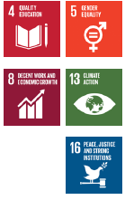 |
The following climate actions will specifically be developed:
The strategy will propose the areas to focus capacity building and climate empowerment, and the responsible state agencies. It will be developed and implemented considering sustainable development goals and criteria of age and gender equity and just transition, integrating knowledge as specific needs of vulnerable communities.
The elaboration and implementation of “Capacity Development and Climate Empowerment Strategy” will consider at least the following elements:
Strengthening institutionality and governance of climate action.
Strengthen climate change sectoral, national and subnational institutions in Chile.
Promote citizen participation, focused on vulnerable communities, in the development and implementation of climate change policies, programs, plans and actions.
Public provision of climate change information to facilitate the design and implementation of local actions.
Incorporate a gender approach in all policies, programs, climate change plans and actions.
Promoting the generation of capacities at sectoral, national and subnational levels for climate action in order to strengthen resilience to face the effects of climate change and promote the just transition towards resilient and low-emissions development.
Promoting the elaboration, development and reconversion of labor competencies in order to mitigate GHG emissions and facilitate adaptation to the impacts of climate change and measures adopted to fight it in the labor world, de creasing the negative effects and taking advantage of opportunities that may arise.
Promoting the design and implementation of training programs on environmental and climate change for actors holding key functions at sectoral, national and subnational levels.
Research and science for climate action.
Promote research in climate change related areas in the different fields of science and knowledge.
Promote advanced human capital training in climate change related areas.
Awareness and education for climate action.
Develop formal and informal climate change environmental education processes, to empower the citizenship for climate action.
Generate citizen empowerment processes for an active participation in the resolution of climate change related problems.
Cooperation and exchange of experiences.
Cooperation and exchange among local actors in country and overseas, regarding the development and implementation of climate change mitigation and adaptation actions, about implementation tools (capacity building, technology transfer, financing).
Contribution in Implementation Measures Development and transfer of technologies Nº2 (IM2)
| CONTRIBUTION | SDG |
|---|---|
|
IM2) In 2020, Chile will present its “Climate Change Technology Transfer and Development Strategy” (EDTTCC) and it will initiate the implementation of this strategy to encourage and strengthen technology transfer and development and transfer to support and promote the cultural, social, environmental and economic transformations necessary to achieve sustainable, resilient and carbon neutral development by 2050. To achieve this, state institutions work in coordination with each other and different actors in society, generating multiple co-benefits for different ecosystems, regions and productive sectors. This will enable Chile to take on a leading role in technology development and transfer, transforming this crosscutting challenge into an opportunity for development and wellbeing at national and global levels. |
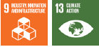 |
Specifically, the following climate actions will be developed:
The implementation of the Strategy will require the establishment of institutionality and governance, and any other areas in which it is necessary to focus the development and transfer of climate technologies. The Strategy will be evaluated and updated at least every 5 years and shall consider at least the following contributions:
Setting EDTTCC's institutionality and governance
By 2020, Chile will have established a governance and institutional framework for the implementation of the EDTTCC and will support the national contribution in mitigation and adaptation, as well as the global long-term response to climate change.
By 2025, Chile will have reviewed and evaluated its EDTTCC, based on the Long-Term Climate Strategy and the current climate plans.
By 2030, Chile will have evaluated and updated its EDTTCC, from the evaluation and monitoring done during the implementation in climate change.
By 2030 Chile will generate, focus and link the supporting tools for technology development and transfer, both for the local development and for the transfer of existing technologies at the local and global level in mitigation and adaptation for the various and/or different prioritized productive sectors at national and regional level.
Implementing and operating mechanisms and instruments for the analysis of needs and for the implementation of technological action plans in specific areas.
Chile will have operating mechanisms and instruments for the analysis of needs and for the implementation of technological action plans in the targeted areas.
Between 2020 and 2025, Chile shall implement the first cycle of the EDTTCC Technological Needs Action Plan for at least three prioritized areas and/or sectors.
By 2021, Chile will have a Climate Technology Inventory System to be transferred that includes the local generation, such as also, the adoption of existing technologies worldwide.
By 2021, Chile will have the promotion tools and mechanisms to focus and articulate processes in Development and Technology Transfer for Climate Change Research Centers, Public Technology Institutes and International Centers, among others. As well as the insertion and training of necessary human capital.
By 2021, Chile will have mechanisms and instruments to promote the adoption of the existing technologies worldwide.
By 2022, Chile will have an inventory of Research Centers, R&D+i initiatives and projects related with mitigation and adaptation, and skills to coordinate Technology Development and Transfer for climate change.
By 2030, Chile will have generated, focused and linked with supporting instruments for technology development and transfer, for local development, such as the adoption of existing technologies at global level, for prioritized areas in mitigation and adaptation in various and/or different priority productive sectors.
In 2019, Chile launched the first “Financial Strategy on Climate Change” (EFCC), within the framework of COP25, thus fulfilling the commitment established in 2015. This strategy, developed with the support of national actors from multiple sectors, the regulatory entity and the financial sector, seeks to establish the guidelines and operating conditions for the transition to a resilient and low carbon economy, and implement the climate and sustainable development objectives to reach the greenhouse gas (GHG) emissions neutrality by 2050. The Strategy considers three guidelines: i) the generation of information, data and analysis under a coherent institutional framework; ii) the promotion of economic and financial green instruments to support the development of low-emission and climate-resilient markets; and iii) the strengthening of green finance in the financial sector. In this line, the following climate financing commitment appears:
Contribution to Implementation Measures Climate Finance N°3 (IM3)
| CONTRIBUTION | SDG |
|---|---|
|
IM3) Implementation of the EFCC will commence in 2020 and it will be updated every 5 years,44 with the first revision taking place in 2021. This will take into account the emissions neutrality target presented in Chile's Long-Term Climate Strategy (LTCS) and, where appropriate, the guidelines defined in this strategy. |
|
The update and/or elaboration of the Financial Strategy on Climate Change, will be the responsibility of the Ministry of Finance and will consider at least the following elements:
Generate information, data and analysis to mobilize capital flows under an institutional framework of policies and measures consistent with the national climate objectives, economic growth priorities, fiscal responsibility and sustainable development with a long-term vision.
Promote the design and implementation of financial green 45N°9/2017 of the Council of Ministers for . Approved under the Agreement instruments and market momentum to contribute to the devel- Sustainability (CMS). opment of climate-resilient and low carbon-emission economic sectors.
Promote long-term public-private cooperation for a better un-derstanding and management of risks and opportunities related to climate change, for decision-making of actors from the local financial sector.
Establish a work plan during 2020 to advance in a public frame-work for the determination of direct and indirect climate expenditure, in line with the efforts to improve efficiency and quality of public expenditure. The implementation of this plan is subject to resources availability as per the corresponding approval to the Budget Law.
Improve Chile's institutionality for the Green Climate Fund (GCF), including:
Improving the evaluation methodology45 and prioritization of projects to be submitted to the GCF, in the light of the current and future national priorities, ensuring the the alignment of prioritized projects with the Long-Term Climate Strategy, and with the objectives and commitments of the NDC.
Standardize calls for public and private projects in order to identify a project portfolio compatible with the GHG emissions neutrality goal by 2050.
about the Nationally Determined Contribution of Chile
In accordance with the provisions of Annex I of Decision 4/ CMA.1,46 relating to the economy wide mitigation goal, Chile informs the following:
Chile's contribution does not consider a reference year, but rather a timeframe (2020-2030) and goal year (2030). Therefore, the goal is not related to the first year or reference.
Mitigation goals have an implementation period ranging from 2020 to 2030. The economy wide mitigation target established 2025 as the maximum year for emissions, which represents a change from a growing trend of GHG emissions towards a decreasing path of emissions from that maximum point. In relation to the GHG budget presented in this NDC, GHG emissions accumulated in Chile between 2020-2030 (11 years), shall not exceed 1,100 MtCO2eq
The economy wide mitigation target, which establishes that emission will peak no later than 2025 and sets a maximum for cumulative emissions figure for the period 2020-2030, considers GHG emissions from sectors included in Chile's latest National Greenhouse Gases Inventory (NGHGI):47 Energy, Industrial Processes and Product Use (IPPU), Agriculture and Waste, excluding the LULUCF sector.
This goal considers the following GHGs: carbon dioxide (CO2), methane (CH4 ), nitrous oxide (N2O), hydrofluorocarbons (HFC), perfluorocarbons (PFC), sulfur hexafluoride (SF6) and nitrogen trifluoride (NF3). The estimation of emissions and absorption of all sectors is carried out according to the 2006 IPCC Guidelines for greenhouse gases national inventories. The accounting considered the global warming potentials of the IPCC Fourth Report (2007).
For the estimation of black carbon international guidelines were adapted to national circumstances. In addition, in 2019 a joint study was carried out with the Climate and Resilience Center of the University of Chile (CR2), which identified potential improvements to the information used for the inventory of this pollutant in addition to evaluating mitigation trajectories by 2030 for inclusion in this NDC.
To review and define the potential goals and actions associated with the contribution for mitigation and as per the national commitment to close all coal-fired power plants by 2040, the Ministries of Environment, Energy, Finance, Foreign Affairs and different sectoral ministries (Ministry of Housing and Urban Planning, Ministry of Transportation and Telecommunications, Ministry of Agriculture and Ministry of Mining), worked on the development of a longterm projection in order to establish a roadmap to reach the GHG neutrality goal established in the Draft Climate Change Framework Law by 2050.48The update of the NDC contribution emerges as an intermediate milestone for this work, identifying the results of planning towards 2030, which is consistent with the long-term vision. This has made it possible to reach a common understanding on the methodology, sources of information, simulation tools and decision criteria used for both.49
The country's vision for managing climate change will be defined under two time horizons:
Mid term (in line with the NDC): 2030
“Each Party shall prepare, communicate and maintain successive nationally determined contributions that it intends to achieve.”(Article 4.2 of the Paris Agreement).
The mid-term vision will be defined as part of the NDC updating stage. The process will be implemented during this year, under the coordination of the Ministry of Environment, and with the collaboration of interested parties from the public and private sector, academia and civil society.
Long term: 2050
“All Parties should strive to formulate and communicate longterm low greenhouse gas emission development strategies” (Article 4.19 of the Paris Agreement).
The long-term vision for the country will be outlined through a participatory process to be executed during 2020, within the framework of the design of Chile's Long-Term Climate Strategy towards 2050.
In order to align the NDC definition with the 2050 vision announced by Chile and considering mitigation commitments as intermediate milestones on the path towards GHG neutrality, the Ministry of Environment has coordinated different intersectoral working groups. These tables were intended to explore the mitigation potential through the projection of national scenarios based on political, technological and economic criteria.
The scenarios forecast to 2050 were based on modeling of the NGHGI's five sectors (Energy, IPPU, Agriculture, LULUCF and Waste), which in turn has been prepared according to the 2006 IPCC Guidelines. The five sectors were addressed and incorporated individually.
The Energy sector was planned with the tools at the Ministry of Energy to evaluate energy demand and supply scenarios, which are the main tools used by this Ministry to elaborate the Long-Term Energy Planning (PELP)50scenarios.
Non-energy sectors (IPPU, Agriculture, LULUCF and Waste) used the same models used by INGEI, but planned in the long term according to the projection of crucial variables for each category or sector, for example GDP, population, head of livestock, hectares of afforestation expected, etc.
In general, this involved modeling in two steps: i) projecting the National GHG emissions with current policies and actions (until May 2019), and ii) a neutrality scenario that includes measures and considerations that might potentially lead Chile to reach GHG neutrality by 2050.
Figure 1: Framework in the elaboration of mitigation forecasts and scenarios for neutrality and NDC
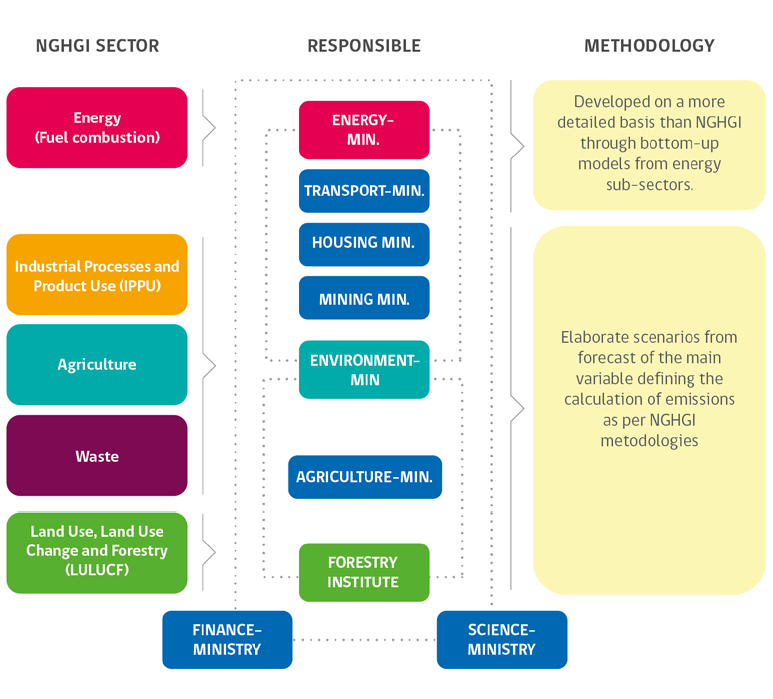
Energy sector
The general framework and the models used in the process are detailed in the document “Chilean NDC Mitigation Proposal: Methodological approach and supporting ambition”, developed by the Bureau of Mitigation and Energy of the Scientific Committee of COP25.51 Figure 2 is part of that document and explains the information and interaction flow in scenarios development and models.
Figure 2: Methodological framework for modeling GHG scenarios in the energy sector

Source: Chilean NDC Mitigation Proposal: Methodological Approach and Supporting Ambition. Mitigation and Energy Working Group Report. Santiago: COP25 Scientific Committee
The figure illustrates the energy analysis process including its main components. Each section of the diagram shows the logical steps of the methodological approach and each block represents specific models, a common assumption of the variables projected, and the criteria used during the process.
Section A establishes the main micro and macroeconomic projections, incorporating other local and complementary vari - ables to feed the national demand projections on energy services. This demand for services is converted into energy needs using specific models by economic sector, and the emissions inventory of the energy sector as a start point. The calculation of current policies' stage incorporates this information and is subsequently used as a baseline to compare emissions and cost levels for dif - ferent mitigation scenarios (Section B).
In section C, the forecast on power generation is conducted through a deterministic uninodal model of expansion at minimum cost. Other energy sectors of the energetic demand are modeled considering cost-effectiveness criteria, which are constructed through the elaboration of a marginal abatement costs curve.
Mitigation alternatives include the adoption of various tech - nologies, intensities, implementation time, demand management and reallocation of demand among the sectors. These alternatives are proposed, compiled and analyzed in Section B.
As a baseline scenario, the iterative process starts with the calculation of GHG emissions and costs under national policies depending on the adoption of technology. In Section D, the result of the calculation of abatement costs is used as a guide to make a new path that is analyzed again in each module. Ultimately, the output allows refinement of the marginal cost reduction curve and the calculation of emissions. The projected emissions in the pro - posed scenario, plus the emissions of other non-energy sources are compared to meet the objective of the process: GHG neutrality by 2050 (which assumes a capture from the LULUCF sector of 65 MtCO2eq by 2050, similar to 2016).
The measures involved in the scenarios analyzed are listed in Table 1. It is worth noting that the modeling performed consid - ers scenarios which do not represent any type of commitment in terms of implementation of the measures modelled. They repre - sent measures that might potentially be taken to reach neutrality, but which might —or not— be included in sectorial mitigation plans.
Table 1: Measures considered in scenarios projected
| Description | Reference Scenario | Carbon Neutrality Scenario | ||
| Scope | Measure | Sector | ||
| Stations withdrawal | Renewable energies replacing thermal power station | Energy | Withdrawing 2,500 MW by 2050 | Withdrawing 5,500 MW by 2040 |
| Sustainable building | Supporting housing energy renewal | Energy | OGUC | OGUC & 57% houses (70% apartments) electric heating by 2050 |
| SST - residentialy public | Energy | No related measures | 52% in housing use of ACS & y 10% in hospitals by 2050 | |
| Distributed generation | Energy | 1278 GWh in residential by 2050 & 3633 GWh in commercial | 1.800 GWh in residential by 2050 & 5.657 GWh in commercial | |
| RT vulnerable houses | Energy | No related measures | Reconditioning 20.000 houses/year | |
| New MEPS | Energy | No related measures | MEPS in TV, dish washer, dryer, electric furnace and microwaves | |
| Public and commercial electric heating | Energy | No related measures | Supermarkets, department stores and hospitals use 84%,76% y 48% by 2050. | |
| Geothermic | Energy | No related measures | 35 GWh at national level. That figure remains the same until 2050. | |
| District heating | Energy | No related measures | 0.2% in the energetic consumption matrix for heating use | |
| Electro-mobility | 100% electric taxis | Energy | 21% shared taxis by 2050 | 100% shared taxis by 2050 |
| Public transportation-MR | Energy | 21% shared taxis by 2050 | 100% urban public transportation buses in Chile by 2040 | |
| Public transportation - Regions | Energy | 0% buses in regions (not MR) by 2050 | 100% urban public transportation buses in Chile by 2040 | |
| Private vehicles 60% | Energy | 21% private vehicles by 2050 | 58% private vehicles by 2050 | |
| Commercial vehicles 60% | Energy | 21% private vehicles by 2050 | 58% private vehicles by 2050 | |
| Change transportation mode | Energy | No related measures | Decrease of private motor transportation due to the transfer to buses and bicycles. | |
| Hydrogen | Cargo transportation | Energy | No related measures | 71% in cargo transportation by 2050 |
| Motor uses in industry and mining | Energy | No related measures | 12% in motor use in industry and mining by 2050 | |
| Thermal use via gas distribution pipe | Energy | No related measures | 7% in housing and 2% in industry by 2050 | |
| Sustainable industry | SST Industry & mining | Energy | No related measures | 10% of thermal use in industry and 16% in copper mining |
| Motor electrification-others in mining | Energy | No related measures | 52% in mining (not copper) by 2050 | |
| Motor electrification-industry | Energy | No related measures | 67% in various industries by 2050 | |
| Motor electrification-commercial | Energy | No related measures | 56% in commercial sector by 2050 | |
| Motor electrification-copper mining | Energy | No related measures | 57% in Surface mines by 2050 y 74% in underground by 2050 | |
| Generation of biogas | Energy | No related measures | New sanitary landfill with electric power stations. | |
| Thermal electrification | Energy | No related measures | 25% additional in thermal use in industry and mining. | |
| Energy management systems | Energy | 0.6% annual savings for all period | Staggered annual savings (0.6% a 2.5%) | |
| MEPS Motors up to 100HP | Energy | No related measures | Total change of motors by 2030 | |
| Non-energy | Capture or use of biogas from sanitary landfill | Waste | Only current projects | By 2035, 100% all urban residential residues deposited in sanitary landfills with burning systems or biogas use. |
| Use of sludge from waste water treatment plant as forest bio-stabilizer | Waste | No related measures | New treatment plants in Concepcion and Valparaiso by 2035, managing methane and sludge use. | |
| Hogs purines bio-managers | Agriculture | No additional projects | Hogs devote their purines to bio-managers in a timeframe to
be defined. Promote good practices in the use of nitrogen fertilizers. |
|
| Technical assistance for the efficient use of fertilizers | Agriculture | No related measures | Promote good practices in the use of nitrogen fertilizers. |
Non-energy Sectors
The relative importance of these sectors will necessarily grow with respect to national emissions. In 2016, the Agriculture, Industries and Use of Products and Waste sectors represented 21% of emissions. By 2050 they are estimated to reach 36%. The results in the neutrality scenario involve significant impacts in IPPU and Waste with respect to a BAU scenario and without considering the Kigali Amendment to the Montreal Protocol, and also without considering important behavioral changes in the generation of waste, due to the increased awareness of and education on climate change.
The agriculture sector offers different options to reduce the magnitude of emissions and increase carbon absorption. These options improve productivity in crops, soil nutrient status, organic waste management, microclimate or biodiversity and, therefore, support climate change adaptation. Interventions to demand, modifications in food selection, loss reduction and food waste were not considered in the sector. These options also reduce GHG emissions and improve the resilience of food systems. These measures together with the mitigation measures in the supply side, allow the implementation of large-scale adaptation and mitigation strategies without threatening food security due to the increased competition for land for food production, and higher prices.
In general, mitigation options for non-energy sectors do not depend on technological changes or high costs. Constraints lie, on the one hand, in organizational and paradigm changes, and, on the other, on establishing new regulations and rules to confront traditional methods as well as rules prescribing and educating for more sustainable climate behavior. In this scenario, we can advance towards mitigation actions; however, the autonomy and multitude of actors, entrenched cultural constraints, or regulation of some services, can be complex barriers to overcome.
The marginal abatement cost curve or MACC, is an important instrument for defining the set of mitigation options bringing national commitments to life, establishing thus a condition of priority and/or relevance regarding cost effectiveness of each of the measures evaluated.
For each of the 33 measures evaluated an analysis of the following indicators was undertaken indicator: CAPEX (present value of additional capital expenditures to implement the measure), OPEX (present value of operating expenses to implement the measure), accumulated reduction of GHG emissions, annual reduction of GHG emissions and marginal cost of abatement (USD/tCO2eq). The cost of abatement is calculated as the present value of the total costs divided by the total reduction of GHG emissions. This is one of the most common indicator to compare mitigation actions.
Most measures would have a negative reduction cost by 2050. Some of the measures considered are energy efficiency actions in industrial processes of large energy industries. For example, the uses of vehicle electrification in industry and mining have a reduction potential of 3.3 MtCO2eq by 2050 and a negative abatement 92 cost. However, this measure faces important economic barriers to implementation.
Electrification measures for private vehicles, commercial vehicles, taxis and buses will play an important role in reaching GHG neutrality. These measures foresee a 10.2 MtCO2eq emission reduction and a negative and highly profitable abatement cost for commercial or intense activity use. The use of hydrogen produced from renewable energy sources for cargo transportation will play a crucial role in reaching the emissions neutrality goal, and it would be economically convenient. However, this technology remains in a development stage and may be commercially competitive only from 2030.
The decarbonization plan of the electric matrix by 2040 would bring a reduction of 7.5 MtCO2eq by 2050, and although it represents a positive reduction cost of USD8/tCO2eq, it may be the most relevant measure in the analysis, since the removal of coal cleans the electricity matrix, enabling actions that involve a higher demand of electricity when improving abatement cost indicators. This applies, for example, in sustainable industry (motor and thermal electrification), in electro-mobility (electric public transport and commercial vehicles), hydrogen (heavy vehicles and machine units) and sustainable buildings (electric heating).
Other measures with a positive abatement cost refer to the thermal rehabilitation of housing, the electrification of boilers and furnaces of the industrial sector, the promotion of public transport and other more efficient modalities, solar heating systems, among others. The following figure shows the marginal abatement cost reduction curve obtained (Palma et al, 2019).52
Figure 3: marginal abatement costs curve.

In the 2015 NDC Chile has recognized that urbanization has reached almost 90%, and the negative effects on air quality remains a major problem despite a long history of efforts and achievements. At the time, there was no quantitative commitment, but soon after a first emissions inventory for black carbon was presented in Chile's 2018 National Communication. These efforts resulted in the presentation of a quantitative emission reduction target of at least 25% by 2030 compared to 2016.
The mitigation commitment for black carbon is consistent with the overall mitigation effort of the energy sector committed by the country. Mitigation actions considered in the analysis are consistent with the measures taken in the energy sector for the mitigation of other GHG, and have been evaluated considering the patterns or trajectory used by the Ministry of Energy.
Besides the general mitigation measures of other greenhouse effect gases, specific measures for environmental decontamination and air quality have been evaluated. These measures mainly refer to controlling residential wood burning, through improvements in housing and building thermic cover, which is driven through new construction and insulation standards for new and existing houses, causing a lower demand for heating energy. Other significant measures refer to off-road machinery emission standards as well as general modal and technological changes in transportation. Beyond this analysis, a more ambitious scenario with greater intensity in the approach of measures specifically focused on reducing black carbon, considering a greater share of district heating, and tighter standards for off-road machinery emissions (Palma et al, 2019) is being assessed.
The mitigation element of this contribution regarding total emissions was developed considering —as a reference— the recommendations of science, the objectives of the Paris Agreement and its requirements regarding mitigation commitments. The updated NDC proposal represents a progression and higher level of ambition regarding the current commitment given that:
Compared to the 2015 NDC, which committed to annual absolute emission levels of about 123 MtCO2eq by 2030 (equivalent to the unconditional intensity target of 30% reduction by 2030 of the c/r 2007 indicator), this new contribution presents a maximum annual emissions level of up to 95 MtCO2eq by 2030.
It is an unconditional target, i.e. it is not subject to qualifying external conditions (grants).
The updated 2030 mitigation commitment also takes into account and is consistent with the GHG neutrality goal by 2050, included in Chile's proposed Draft Framework Law on Climate Change Framework Bill.
Updating the economy wide goal also responds to the calls to strengthen climate action and ambition made by the Secretary General of the United Nations during the 2018 High Level Summit and by the presidents of the COP23 and COP24 through the “Talanoa Call for Action” statement of the Dialogue of Talanoa. Chile, in its role as the COP25 Presidency continued to support those calls in 2019 and 2020.
In line with the requirements of the Paris Agreement, Chile's commitment already has national coverage and economy wide reach (article 4.4), while the accounting and reporting of emissions takes into account all gases not considered in the Montreal Protocol (CO2 , CH4 , N2O, HFCs, PFCs and SF6),using the latest available methodologies (IPCC Guidelines for 2006).
Acknowledgments
This NDC update has been possible thanks to the collaboration of the following international institutions:

See definition of short-lived pollutants or IPCC short-lived climate forcers in: https://www.ipcc.ch/site/assets/ uploads/2018/02/WG1AR5_AnnexIII_ FINAL.pdf↩︎
Project: “Black carbon mitigation in the update of Chile's Nationally Determined Contribution”, developed by the Climate and Resilience Science Center (CR2) for the Ministry of Environment (MMA), through UN Environment and the Climate & Clean Air Coalition (CCAC) financing.↩︎
Intergovernmental Panel on Climate Change (hereinafter IPCC), 2013, 2014.↩︎
Third Biennial Update Report (BUR3, MMA2016). https://mma.gob.cl/wp-content/ uploads/2018/12/3rd-BUR-Chile-SPanish. pdf↩︎
Third Biennial Update Report (BUR3, MMA2016). https://mma.gob.cl/wp-content/ uploads/2018/12/3rd-BUR-Chile-SPanish. pdf↩︎
Third Biennial Update Report (BUR3, MMA2016). https://mma.gob.cl/wp-content/ uploads/2018/12/3rd-BUR-Chile-SPanish.pdf↩︎
http://www.cr2.cl/wp-content/uploads/2015/11/informe-megasequia-cr21.pdf↩︎
INE, 2017 census.↩︎
https://mma.gob.cl/wp-content/uploads/2020/01/6NR_FINAL_ALTA-web.pdf↩︎
The World Bank, https://data.worldbank.org/indicator/ NY.GDP.PCAP.PP.CD?locations=CL↩︎
United Nations Development Program (UNDP, 2019). Human Development Report 2019. http://hdr.undp.org/sites/default/files/ hdr_2019_overview_-_spanish.pdf↩︎
http://www.chileagenda2030.gob.cl/ documentos/informes↩︎
https://www.leychile.cl/Navegar?id- Norma=110315814↩︎
https://sustainabledevelopment. un.org/content/documents/22152Background_ Paper_WRI_SDGNDC_Synergies_ draft_25.03.28_1_.pdf↩︎
https://www.un.org/ga/search/view_ doc.asp?symbol=A/RES/70/1&Lang=S↩︎
http://www.subtrab.trabajo.gob. cl/wp-content/uploads/2019/07/ Informe-Nacional-Voluntario-Chile- 2019-Agenda-20301_compressed- 1.pdf↩︎
“Climate change and the just transition Guide for investor decision-making” https://www.unpri.org/download?ac=6047↩︎
IUCN, 2016. https://portals.iucn.org/library/sites/ library/files/resrecfiles/WCC_2016_ RES_069_EN.pdf↩︎
“GHG neutrality is achieved when emissions are equal to or less than removals”. Definition described in the Proposed Climate Change Framework Law entered the Congress in January 2020.↩︎
https://mma.gob.cl/wp-content/ uploads/2019/07/2018_NIR_CL.pdf↩︎
The GHG balance is determined based on the emission mitigation commitment, specifically commitment M1) and the emission capture commitment detailed in the integration component, specifically commitments I4), I5) and I6).↩︎
https://www.un.org/sustainabledevelopment/ es/sustainable-development- goals/↩︎
https://ar5-syr.ipcc.ch/topic_pathways. php↩︎
https://ar5-syr.ipcc.ch/topic_pathways. phpWRAP(2015), Economic Growth Potential of More Circular Economies, http://www.wrap.org.uk/sites/files/ wrap/Economic%20growth%20potential% 20of_more% 20circular% 20economies.pdf.↩︎
Sustainable management of native forest: the collection of expertise and techniques aimed at promoting the regeneration, recovery, conservation and/ or protection of native forests, ensuring the production of various goods and services in a sustainable and efficient manner, while also preserving the value of the forest ecosystem.↩︎
Recovery of native forest: the collection of expertise and techniques aimed at fostering the recovery, reestablishment and restoration of the capacity and functions of native forests which have been degraded or affected by wildfires.↩︎
To be understood as those actions aimed at enabling the recovery of forest ecosystems affected by wildfires which have lost the legal status of being a forest.↩︎
These conditions are some of those defined in the reforestation and revegetation program in prioritized communities (MT.4.) of the National Strategy for Climate Change and Plant Resources (ENCCRV) of CONAF.↩︎
Preferably forestry land: All those lands that due to weather and soil conditions must not be plowed permanently, whether or not they are covered with vegetation, excluding those that not suffering degradation can be used in agriculture, fruit growing or intensive livestock (Article 2. Decree Law No. 2565, 1979, of the Ministry of Agriculture replacing Decree Law 701, 1974).↩︎
Priority areas for conservation: area of ecological value, identified by its contribution to representativeness ecosystem, its ecological uniqueness or because it constitutes habitats of endangered species, prioritized for conservation.↩︎
The commitment to reduce emissions from deforestation and forest degradation is based on analysis carried out to establish the Forest Emission Reference Level/Forest Reference Level within the REDD+ framework of the UNFCCC. This analysis has calculated the status of emissions linked to deforestation, forest degradation, stock enhancement and conservation of native forest in the regions from Maule to Los Lagos over the period 2001-2013. These reference levels were approved by the UNFCCC Secretariat on 31st August 2016. In 2018, the first Technical Annex of REDD+ Results was presented to the UNFCCC Secretariat alongside the Biennial Update Report (BUR), which was approved on 30th August 2019, reporting on Chile’s emissions reduction over the period 2014-2016. Chile’s reference levels and ability to measure and report on emissions reduction conform with the terms of the Warsaw Framework, approved by the UNFCCC in 2019.↩︎
Ove Hoegh-Guldberg & John F. Bruno. (2010). The Impact of Climate Change on the World's Marine Ecosystem. Science, Vol. 328, pp: 1523↩︎
Hans-O. Pörtner, Karl D., Boyd P., Cheung W., Lluch-Cota S., Zavialov P., et al. (2014). “Ocean Systems”, in Climate Change 2014: Impacts, Adaptation, and Vulnerability. Part A. Global and Sectoral Aspects. Contribution of Working Groups II to the Fifth Assessment Report of the Intergovernmental Panel on Climate Change, eds. CB Field, VR Barros, DJ Dokken, KL Mach, MD Mastrandrea, TF Bilir et al. (New York, NY: Cambridge University Press), 411-484.↩︎
Jean-Pierre Gattuso, Magnan Alexandre K., Bopp Laurent, Cheung William WL, Duarte Carlos M., Hinkel Jochen, Mcleod Elizabeth, Micheli Fiorenza, Oschlies Andreas, Williamson Phillip, Billé Raphaël, Chalastani Vasiliki I., Gates Ruth D., Irisson Jean-Olivier, Middelburg Jack J., Pörtner Hans-Otto, Rau Greg H. (2018). Ocean Solutions to Address Climate Change and Its Effects on Marine Ecosystems. Frontiers in Marine Science, Vol. 5, pp: 337↩︎
Greg H. Rau. (2014). Enhancing the ocean's role in CO2 mitigation in global environmental change, in Handbook of Global Environmental Pollution, Vol. 1, ed. B. Freedman, pp: 817.↩︎
Le Quéré, C., Andrew, RM, Friedlingstein, P., Sitch, S., Pongratz, J., Manning, AC, et al. (2018). Global carbon budget 2017. The Journal of Earth System Science. Data 10, pp: 405.↩︎
Nicolas Gruber, Clement D., Carter B., Feely R. van Heuven S., Hoppema M., Ishii M. Key R., et al. (2019). The oceanic sink for anthropogenic CO 2 from 1994 to 2007. Science. Vol. 363, pp: 1193↩︎
Resplandy L, Keeling RF, Eddebbar Y, Brooks MK, Wang R, Bopp L, Long MC, Dunne JP, Koeve W, Oschlies A., (2018). Quantification of ocean heat uptake from changes in atmospheric O2 and CO2 composition. Nature, Vol.563, pp:105.↩︎
Laure Zanna, Samar Khatiwala, Jonathan M. Gregory, Jonathan Ison, Patrick Heimbach (2019). Global reconstruction of historical ocean heat storage and transport. Proceedings of the National Academy of Sciences, Vol. 116 (4),pp: 1126↩︎
Jean-Pierre Gattuso, Magnan, A., Billé, R., Cheung, WWL, Howes, EL, Joos, F., et al. (2015). Contrasting futures for ocean and society from different anthropogenic CO2 emissions scenarios. Science, Vol. 349, pp: 4722↩︎
Target No. 11, AICHI Biodiversity Targets. https://www.cbd.int/sp/targets/↩︎
In this line, it is worth to underline the initiative named “Green Status”, where the State of Chile commits to promote with concrete actions a sustainable management in its daily operations, leading through example in terms of sustainability. This program consists of a registration system developed by the Ministry of the Environment aimed at incorporating good environmental practices in State Bodies' work (estadoverde. mma.gob.cl)↩︎
https://www.hacienda.cl/oficina-de-la-deuda-publica/bonos-verdes/otros-documentos- relevantes/estrategia-financiera.html↩︎
The process will be carried out together with the cycle to create or update Chile’s NDCs.↩︎
Approved under the Agreement N°9/2017 of the Council of Ministers for Sustainability (CMS).↩︎
https://unfccc.int/sites/default/files/ resource/cma2018_3_add1_advance. pdf#page=9↩︎
https://mma.gob.cl/wp-content/ uploads/2019/07/2018_NIR_CL.pdf↩︎
http://www.senado.cl/appsenado/ templates/tramitacion/index.php?boletin_ ini=13191-12↩︎
Details of the technical and collaborative process between ministries and academia have been documented in a white paper entitled “Chilean NDC Mitigation Proposal: Methodological approach and supporting ambition”, developed by the Mitigation and Energy Committee of the Scientific Committee of COP25. https://mma.gob.cl/primer-proceso- de-actualizacion-de-la-contribucion- determinada-↩︎
Process established in the General Law of Electric Services, as stipulated in the respective Regulation (SD 134 from January 5, 2017)↩︎
Chilean NDC Mitigation Proposal: Methodological Approach and Supporting Ambition. Mitigation and Energy Working Group Report. Santiago: COP25 Scientific Committee; Ministry of Science, Technology, Knowledge and Innovation.↩︎
Chilean NDC Mitigation Proposal: Methodological Approach and Supporting Ambition. Mitigation and Energy Working Group Report. Santiago: COP25 Scientific Committee; Ministry of Science, Technology, Knowledge and Innovation.↩︎